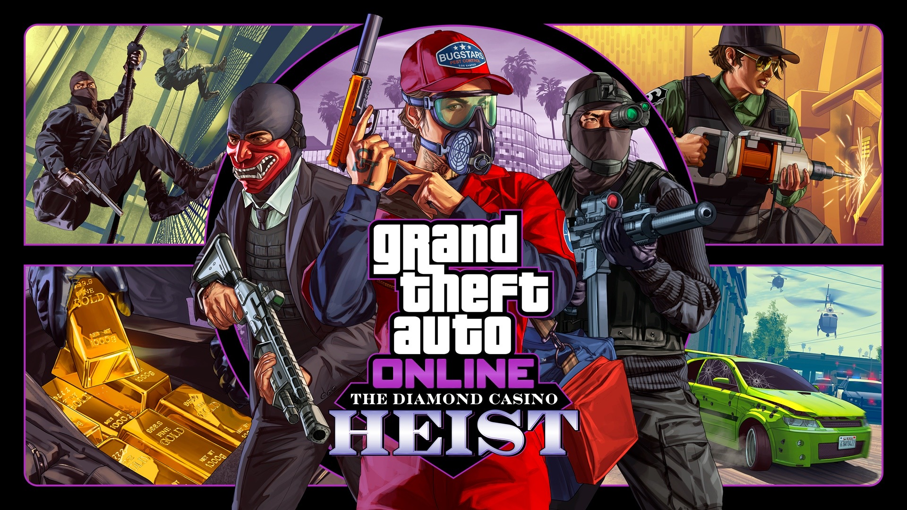

Grand Theft Auto Online задумывался как отдельный и в тоже время, дополняющий режим для одиночной игры. Мир разделен на сессии, в каждой из которых может присутствовать до 30 игроков[5] (на PS3 и Xbox 360 — до 16), и каждый игрок свободно может зайти в лобби, для прохождения индивидуальных заданий, ограблений в кооперативе, или в режиме сражения против других игроков. Дополнительная опция Content Creator дает возможность настраивать лобби по определенным параметрам